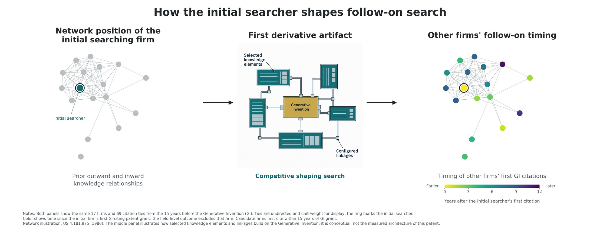

How firms choose where and how to invent
Firms search by selecting knowledge elements and establishing linkages among them. My work examines the direction of that search, the knowledge positions from which firms begin, and how early search choices change opportunities for subsequent invention.
Related research
Working paper
Shaping the Search Landscape: Generative Inventions and Follow-On Invention

How does the first firm to build on a breakthrough shape the inventive paths and opportunities available to firms that follow?
Summary
I develop competitive shaping search to explain how a firm's early choices of knowledge elements and linkages can affect later search around the same generative invention. Horizontal shaping makes a derivative path less attractive to other firms. Vertical shaping positions the first searcher to benefit from future recombination possibilities. Using patent data, I relate knowledge relationships established before the breakthrough to the timing of later follow-on invention.